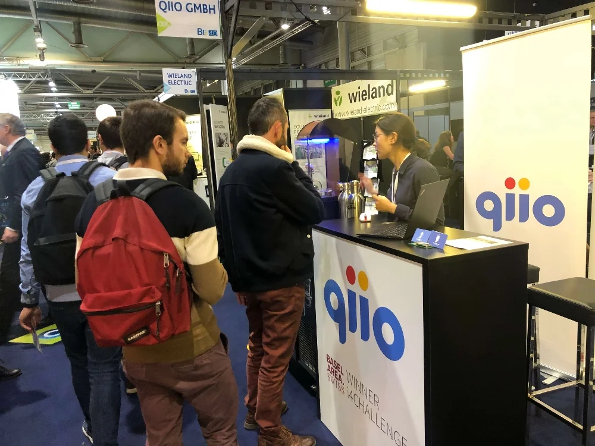

On September 27th, 2019, BaselArea.swiss judged start-ups and SMEs from
Switzerland, Alsace or Baden-Württemberg at the Trinational trade fair Industry 4.0 in Mulhouse, France. The
i4Challenge focused on innovative solutions, new approaches and sophisticated products in the field of
Industry 4.0. A high-caliber jury of independent industry experts evaluated and benchmarked applicants very
thoroughly.
The result: qiio Ltd. was among only six firms to receive a top award for our end-to-end IoT Solutions!
At a follow-up European event to be held November 19-20, 2019 in Mulhouse, BaselArea.swiss will sponsor
these six winners at the Industry 4.0 trade fair BE 4.0. At this event, 270+ companies from Switzerland,
France, Germany, Quebec, Spain and The Netherland will present their innovations for Industry 4.0. This will
give qiio the opportunity to introduce our solutions to interested customers, partners and visitors on a
pan-European stage.
About qiio
qiio Ltd. provides complete, end-to-end IoT solutions including hardware, software, connectivity, cloud
services, and operation. Everything customers need to securely connect, monitor and control their products
via an online dashboard is delivered. We take the complexity out of the IoT, creating “off-the-shelf”
solutions customized to customer requirements within 4-8 weeks. With headquarters in Zürich, Switzerland,
qiio’s technology is ideal for logistics, remote monitoring and predictive maintenance. Visit www.qiio.com
for details.
About BaselArea.swiss
The core function of BaselArea.swiss https://www.baselarea.swiss/ is to promote the strengths of the
economic region as a center for business and to support both Swiss and foreign entrepreneurs and companies
in the implementation of their innovation and business projects in the region.